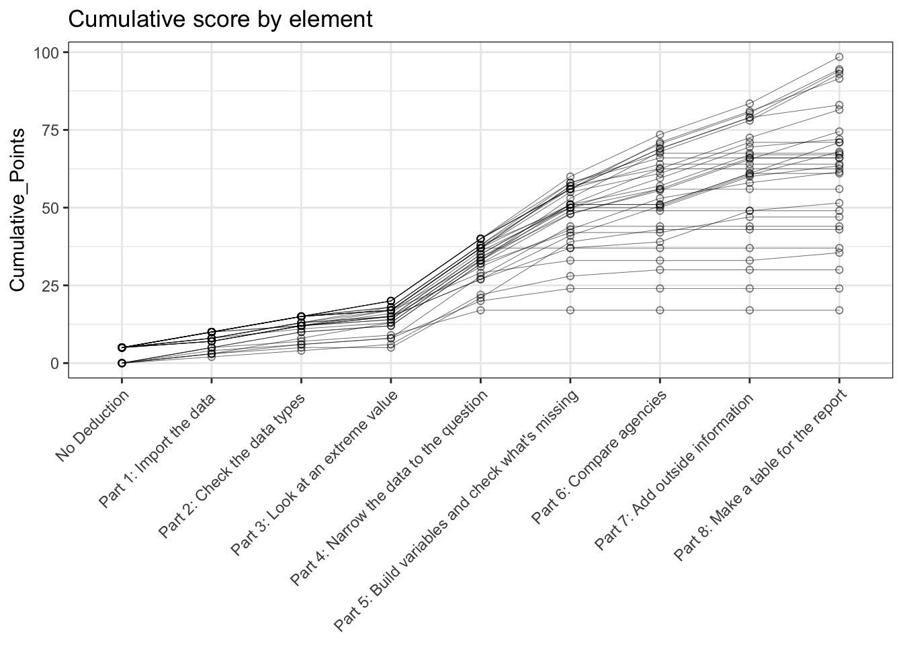
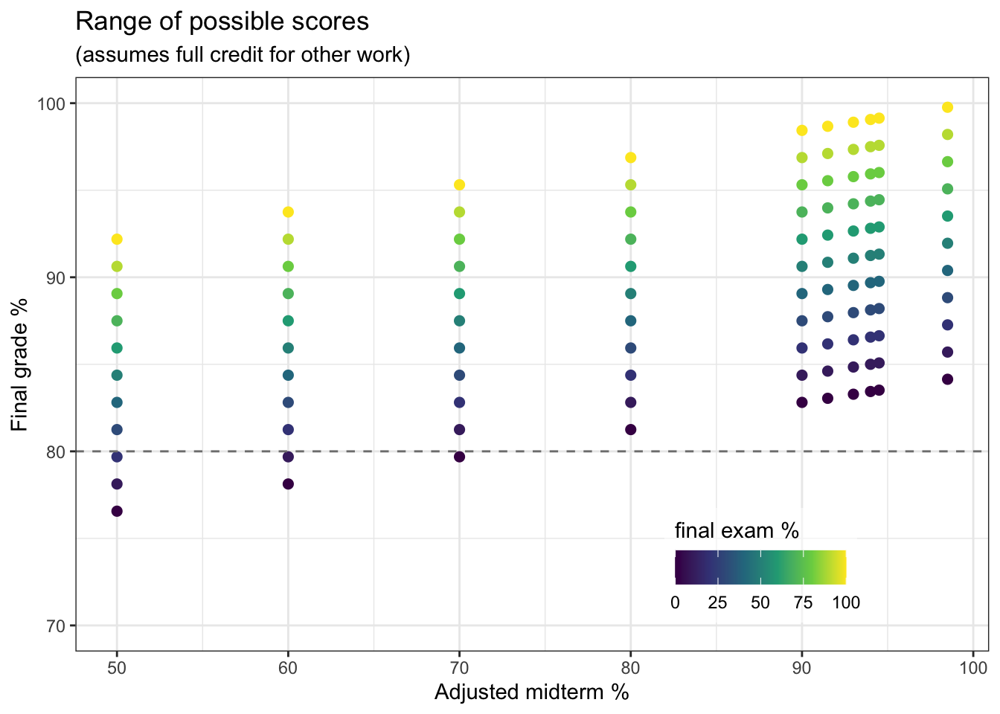

Midterm Debrief
Good job
First off, thanks to all who took the midterm. Regardless of how you did, you answered the bell; take pride in that. Our aim for the final few weeks of the quarter is for your midterm exam to guide the way forward. What has worked for you and what hasn’t thus far?
Three paths
Keep it up
If you kicked ass on the exam… keep doing what you are doing. But be ready to adapt and get help when/if functions, iteration, or any of the new things to come throw you for a loop.
Build on proof of concept
If you did well on what you completed, but ran out of time and didn’t
do the final problem(s)… (for the most part) keep doing what you are
doing! Your learning process is sound, and now it’s about building on
that with additional practice and experience. The caveat is that the
final portions of the exam addressed important later-stage skills such
as pivots (pivot_wider() and pivot_longer()),
joins (left_join() and her cousins), and conditionals
(ifelse() and case_when())–so be mindful that
the things you didn’t get to might be harder than the things you did and
take more work to solidify.
Keep digging
If you got stuck at the beginning, and perhaps got a little flustered
and nervous… that’s okay too! For many folks who got stuck here, it
involved issues like figuring out your file tree/working directory or
recognizing that you didn’t need to call download.file()
when you had already downloaded the file to your local computer from
Canvas. In our experience as R instructors, these issues tend
to crop up when default routines subvert folks’ conscious problem
solving. R skills such as reading in data files or navigating a
file directory are boundary cases where you have to think not just about
specific pieces of R code but also how your code relates to
your broader computing environment and the broader task at hand. Those
sorts of sort-of-coding-sort-of-computing aspects are where we see the
most cracks arise when folks are new to this stuff because you have to
build the solution (e.g., point R to the correct file
path) rather than just remember the right function.
If you were one of those folks, we are here for you! We want to work with you to emphasize the problem solving component specifically. Anticipate that you fill feel some nerves when you take the final exam as well, and focus on error routines, debugging, and big picture assessment that help you take a step back, take a breath, and dig back in the next time an unexpected code crisis happens.
Rest of the quarter
For all: As we add in more complicated processes and extended coding tasks, remember that error messages are your friend. Even if you don’t really understand the message, it can still point you to where the problem is occurring. And if you don’t change anything about your code, that message is coming back. So moving forward our emphasis should be on using the errors rather than feeling abused by them–read, interpret, and respond. In the words of Brad Pitt in a movie I vaguely remember watching, “Slow is smooth, smooth is fast”. Slowing down and giving the errors your full time and attention will speed you up in the end.
Midterm results
At this point, I know you all just want to see how you did on on the exam and how we are scoring it. So let’s break it down R Markdown-style…
library(tidyverse)
## de-identified scores: one row per exam, in random order, no names or IDs
sc <- read_csv('https://ucd-rdavis.github.io/R-DAVIS/data/midterm_2026_scores_anon.csv')Overall scores
First, here’s all the total scores (With a LOESS smoother underneath as foreshadowing for Data Viz in weeks 7 and 8)
sc <- sc |>
## drop the NA scores (folks who aren't enrolled)
filter(!is.na(`Total Score`)) |>
## rank scores 1 (lowest) to 32 (highest)
mutate(rank = rank(`Total Score`,ties.method = 'first'))
## initiate ggplot object, set default x and y aesthetic variables
ggplot(sc,aes(x = rank,y = `Total Score`)) +
## smooth y ~ x, will use default LOESS
geom_smooth() +
## plot y ~ x points
geom_point() +
## set nicer theme + blank out the x-axis ranks that don't mean anything
theme_bw() + theme(axis.text.x = element_blank()) +
## add axis label and extend limit to full exam range
scale_y_continuous(name = "% score",limits = c(0,100)) +
## add axis label
scale_x_continuous('Students') +
## add title
ggtitle('Exam scores (out of 100 points') ## `geom_smooth()` using method = 'loess' and formula = 'y ~ x'
Points by exam part
Now, we can break down the aggregate scores into individual problem scores. First, let’s create cumulative point totals to see how far folks got on the exam.
## the columsn we need here all have "Part ##:" format.
## we'll use a function that works *within* select() that uses regular expression syntax (see https://regexr.com/ for more info) to essentially do fuzzy matching: "Any column names that contains the string "Part" + [space] + [any number between 0 and 9] OR "Deduction"
## we'll also select rank to preserve an anonymous ID column for indexing
exam_parts <- sc %>% select(matches("Part [0-9]|Deduction"),rank)
## pivot to table that has three columns: rank (exam id proxy), part, and points
exam_part_long <- pivot_longer(exam_parts,cols = -rank,names_to = 'Part',values_to = 'Points_Earned')
## we want to order the cumulative sum by part. there are a lot of ways we can do that, but an easy one is to use our old friend the factor() data type.
## before we do that though, let's clean up the strings a bit.
## here is some regex code you don't need to know
## get rid of parenthetical points possible
exam_part_long$Part <- gsub('\\s\\(.*)','',exam_part_long$Part)
## get rid of leading number, colon, and space
exam_part_long$Part <- gsub('^[0-9]\\:\\s','',exam_part_long$Part)
## deduction is sort of inverted -- you have 5 points if you DIDN'T take one. So let's fix that.
exam_part_long$Part[grepl("Deduction",exam_part_long$Part)] <- "No Deduction"
## and if we just coerce this to a factor, the default will be alphabetical order and "Deduction" will be first, "Part 2" will be second, "Part 8" last, etc.
## Deduction is the stand-in for part 1 / the stand-in for folks who we got "unstuck" for the 5 point fee.
exam_part_long$Part <- as.factor(exam_part_long$Part)
## now we need to cumulative sum points by ID and part
exam_cumulative <- exam_part_long |>
## set group so cumulative sum is only within rank (exam id)
group_by(rank) |>
## arrange first by rank, then by part, so it's rank 1 part 1 part 2 ... rank 2 part 1 part 2...
arrange(rank,Part) |>
mutate(Cumulative_Points = cumsum(Points_Earned))
ggplot(exam_cumulative,aes(x = Part,y = Cumulative_Points,group = rank)) +
## hollow dots a bit translucent so we can see them all
geom_point(pch = 21,alpha = 0.5) +
## make the lines small so they don't dominate
geom_line(lwd = 0.1) +
## classy theme!
theme_bw() +
## rotate the labels so they fit, kill the axis title
theme(axis.text.x = element_text(angle = 45,hjust = 1),axis.title.x = element_blank()) +
ggtitle('Cumulative score by element')
You can see the spread starts to diverge at Part 4, and we had a really wide distribution across the finish line. In general, this is what we expected. We’ve had more time to practice the initial elements than the Week 4/5 content, and the Week 4/5 content builds directly on Wks 1/2/3. So if you are still solidifying the early week items, you might not have even gotten to the later parts of the exam.
Midterm grades
In terms of moving forward, here is our proposal. We are going to offer a non-parametric adjustment that works as follows:
- You go back and complete the exam (fully). Don’t use AI, don’t copy your friends code. Work through it as a learning exercise.
- Submit a revised exam to us by Tuesday, November 10th (we’ll post a canvas assignment).
- We will non-parametrically “squish” the grades as follows for anyone who completes the exam-redo (based on where your initial exam performance was)
##add a great themes package to access good color palette
library(ggthemes)## Warning: package 'ggthemes' was built under R version 4.5.2## bins at 50, 70, 80
sc <- sc |> mutate(nonparametric_score = case_when(
`Total Score`<=45 ~ 50,
`Total Score`<=55 ~ 60,
`Total Score`<=65 ~ 70,
`Total Score`<=75 ~ 80,
`Total Score`<=85 ~ 90,
T ~ `Total Score`))
ggplot(sc) +
geom_point(aes(y = `Total Score`, x = rank,col = 'raw')) +
geom_point(aes(y = nonparametric_score, x = rank,col = 'squished')) +
theme_bw() + theme(legend.position = c(0.8,0.3)) +
scale_y_continuous(limits=c(0,100))+
scale_color_colorblind('score')
Basically, by reviewing the exam and catching up on the items you missed or didn’t get to, you get a bunch of points back in a way that advances our learning goals and doesn’t place added pressure on the final.
Projected outcomes by midterm performance
In terms of how this maps to your final grades, remember that the bulk of R-DAVIS points are credit/no-credit participation. There are 288 points available in total, of which 198 are in-class scratch (10x9), labs (10x9), and video discussions (3x9). You’re in control of those, so let’s map out how the squished midterm + effort-driven activities map to final grade percentages across the range of final exam outcomes.
total_points_possible <- 45 + 90 *2 + 18 + 45
non_exam_points <- 2*90 + 18
## sequence of potential final exam scores
final_exam <- seq(0.0,1.0,0.10)
## expand.grid generates pairings of every squished midterm score and the final_exam hypothetical sequence
final_projections <- expand.grid(unique(sc$nonparametric_score),final_exam) |>
rename(final_prop = Var2,midterm_score = Var1) |>
arrange(midterm_score) |>
mutate(other_points = non_exam_points) |>
mutate(total_points = midterm_score/100 * 45 + other_points + final_prop * 45,
total_perc = 100 * total_points / total_points_possible)
ggplot(final_projections) +
geom_point(size = 2,aes(x = midterm_score,y = total_perc,color = final_prop*100)) +
scale_color_viridis_c(name = 'final exam %') +
theme_bw() +
theme(legend.direction = "horizontal",
legend.background = element_rect(fill = alpha('white',0.5)),
legend.title.position = 'top',
legend.position = c(0.75,0.15)) +
scale_x_continuous(name = 'Adjusted midterm %') +
scale_y_continuous(name = 'Final grade %',limits = c(70,100)) +
geom_hline(yintercept = 80,col = 'grey50',lty = 2) +
labs(title = 'Range of possible scores',subtitle = "(assumes full credit for other work)")
As you interpret this plot (we can critique the design choices when
we talk about Data Viz) there are several key things to note. First: (1)
Assuming you did/do the effort-driven work, everyone is still
in range of an A and everyone can get a “grad studies passing
grade” (i.e., > B-) by beating 30% on the final exam. I
really want each of you to do better than that of course. But you can
see there is a clear floor. I had to truncate the Y-axis at 70% (C-)
just to make the data points show up well.